ENTREGA ÚNICA - Reto 01
Índice
- Portada
- 1. Introducción
- 2. Conectores internos (energía)
- 3. Conectores de datos
- 4. Slots de expansión
- 5. Conectores externos
- 6. Bibliografía
Portada
Reto 1 — Investigación_Desarrollo_Conectores_Slots
Módulo: Fundamentos de Hardware (ASIR)
Alumno/a: Jesus Soto Soto
Curso: 2025/26
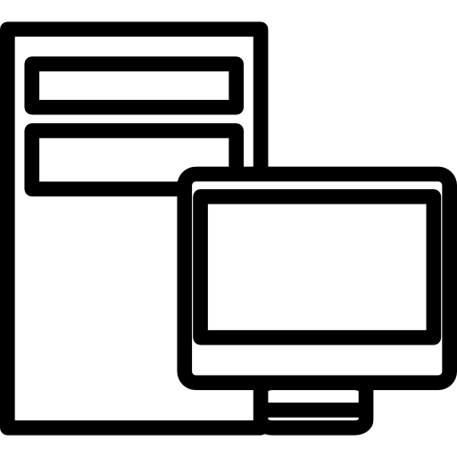
1. Introducción
Introducción
Piensa el PC como una ciudad:
- Conectores = carreteras y puentes (energía y datos).
- Slots = parcelas para ampliar (tarjetas).
Objetivo del reto: identificar y explicar conectores/slots actuales y conectores/slots antiguos pero aun en uso.
2. Conectores internos (energía)
Conectores: 12VHPWR / 12V-2x6
Descripción breve: Nuevo conector de alto rendimiento para GPUs > 300 W.
Pines/Carriles/Voltajes/Velocidad: Hasta 600 W / +12 V / líneas de detección
Uso principal: GPU PCIe 5.0/ATX 3.0.
Compatibilidad actual: Alta
Identificación física
- Compacto de 16 pines (12 potencia + 4 señal); cable grueso, diseño moderno PCIe 5.0.
Notas técnicas
- 12V-2x6 mejora seguridad y flexibilidad del 12VHPWR original.
Fotos
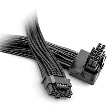
Enlaces
-https://www.tomshardware.com/news/pcie-5-power-connector-600w-next-gen-amd-nvidia-gpus?utm_source
Conector: ATX de 24 pines
Descripción breve: Conector principal que alimenta la placa base en sistemas ATX/ATX12V.
Pines/Carriles/Voltajes/Velocidad: 24 pines · +3.3V, +5V, +12V
Uso principal: Alimentación de la placa base
Compatibilidad actual: Alta
Identificación física
- Bloque rectangular de 24 pines con clip, situado en el borde de la placa base.
Notas técnicas
- Estándar ATX12V 2.x. No confundir con el EPS de CPU (4/8 pines).
Fotos

Fuentes
Conector: EPS de 8 pines
Descripción breve: Suministra energía dedicada al procesador.
Pines/Carriles/Voltajes/Velocidad: 8 pines (2×4) / +12 V / hasta 336 W aprox.
Uso principal: Alimentación del procesador (CPU).
Compatibilidad actual: Alta
Identificación física
- Conector negro dividido 4+4 pines; encaja en zona superior de la placa base (CPU).
Notas técnicas
- Estándar ATX12V/EPS12V; algunos sistemas requieren doble conector.
Fotos
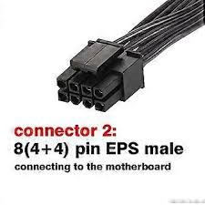
Enlaces
-https://allpinouts.org/pinouts/connectors/power_supply/eps12v-eatx12v-8-pin/?utm_source=
Conectores: Molex (legacy)
Descripción breve: Alimenta periféricos y ventiladores antiguos.
Pines/Carriles/Voltajes/Velocidad: 4 pines / +12 V, +5 V / hasta 132 W aprox.
Uso principal: Ventiladores, bombas, accesorios antiguos.
Compatibilidad actual: Baja
Identificación física
- Rectangular blanco de 4 pines grandes; carcasa rígida.
Notas técnicas
- En desuso; aún presente por compatibilidad heredada.
Fotos
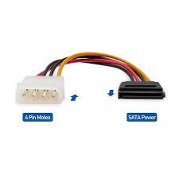
Enlaces
-https://allpinouts.org/pinouts/connectors/power_supply/molex_8981_peripheral_power_connector/
Conector: PCIe
Descripción breve: Alimenta tarjetas gráficas y dispositivos PCI Express.
Pines/Carriles/Voltajes/Velocidad: 6 pines = 75 W, 8 pines = 150 W / +12 V
Uso principal: GPU, tarjetas de expansión.
Compatibilidad actual: Alta
Identificación física
- Conector negro con pines cuadrados/biselados; versiones 6 pines o 6+2
Notas técnicas
- Aún estándar; coexistente con 12VHPWR. Se pueden combinar.
Fotos
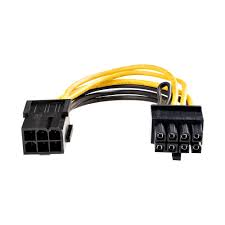
Enlaces
-https://graphicscardhub.com/graphics-card-pcie-power-connectors/?utm_source
Conector:SATA Power
Descripción breve: Alimenta unidades SATA (HDD, SSD, ópticas).
Pines/Carriles/Voltajes/Velocidad: 15 pines / +3.3 V, +5 V, +12 V / hasta 54 W
Uso principal: Almacenamiento SATA.
Compatibilidad actual: Alta
Identificación física
- Plano, alargado y fino, con muesca en L asimétrica.
Notas técnicas
- Sustituyó al Molex; admite conversores a Molex o PCIe.
Fotos
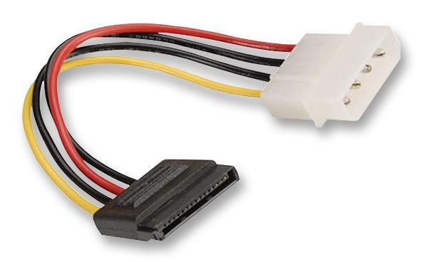
Enlaces
-https://allpinouts.org/pinouts/connectors/data_
storage/serial-ata-sata-serial-advanced-technology-attachment/?utm_source
| Conector | Identificación física | Descripción breve | Pines / Carriles / Voltajes / Velocidad | Uso principal | Compatibilidad actual | Referencia técnica |
|---|---|---|---|---|---|---|
| ATX 24 pines | Conector grande rectangular de 24 pines en placa base | Alimentación principal de la placa base | 24 p / +3.3 V, +5 V, +12 V / ~300 W | Placa base | Alta | AllPinouts |
| EPS 8 pines (4+4) | 4+4 pines negros en CPU | Alimentación dedicada al procesador | 8 p / +12 V / ~336 W | CPU | Alta | AllPinouts |
| SATA Power | Conector plano en “L” | Energía para discos SATA (HDD/SSD) | 15 p / +3.3 V, +5 V, +12 V / ~54 W | Almacenamiento | Alta | AllPinouts |
| PCIe 6/8 pines | Conector negro 6 o 6+2 pines | Alimentación para GPU o tarjetas PCIe | 6 p = 75 W, 8 p = 150 W / +12 V | GPU | Alta | GraphicsCardHub |
| 12VHPWR / 12V-2x6 | Compacto 16 pines (12 + 4) | Alimenta GPUs PCIe 5.0 (hasta 600 W) | 12 V / 600 W máx | GPU ATX 3.0 | Alta | Tom’s Hardware |
| Molex (legacy) | Blanco 4 pines grandes | Periféricos antiguos y ventiladores | 4 p / +5 V, +12 V / ~132 W | Accesorios antiguos | Baja | AllPinouts |
3. Conectores de datos
Conector de datos: SATA (Serial ATA)
Descripción breve: Interfaz de datos en serie para conectar HDD/SSD/unidades ópticas.
Pines/Carriles/Voltajes/Velocidad: 7 pines · 1.5/3/6 Gbps (SATA I/II/III)
Uso principal: Conexión de almacenamiento interno común
Compatibilidad actual: Alta
Identificación física
- Conector plano en forma de L; cables delgados, longitud típica ≤1 m.
Notas técnicas
- Hot-swap según controladora; no lleva alimentación (va por conector SATA power).
Fotos
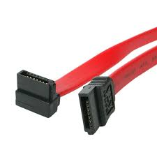
Fuentes
Conector de datos: M.2 (NVMe/SATA)
Descripción breve: Conector interno para SSDs compactos tipo tarjeta.
Pines/Carriles/Voltajes/Velocidad: Hasta 4 carriles PCIe / NVMe: PCIe 4.0–5.0 x4 / hasta 32–64 Gb/s
Uso principal: SSD M.2 NVMe o SATA.
Compatibilidad actual: Alta
Identificación física
- Ranura rectangular con tornillo de fijación; clave M (NVMe) o B/M (SATA).
Notas técnicas
- Formato principal actual; depende del soporte de la placa base.
Fotos
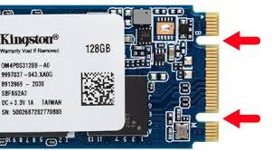
Fuentes
Conector de datos: U.2
Descripción breve: Interfaz de alto rendimiento para SSDs empresariales.
Pines/Carriles/Voltajes/Velocidad: 68 pines / PCIe x4 / NVMe / hasta 32 Gb/s
Uso principal: SSDs NVMe 2.5" (entorno servidor/entusiasta).
Compatibilidad actual: Media
Identificación física
- Conector rectangular similar al SATA Express, con múltiples segmentos.
Notas técnicas
- Menos común en equipos domésticos; usado en estaciones o servidores.
Fotos
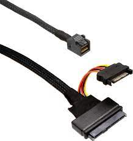
Fuentes
| Conector | Identificación física | Descripción breve | Pines / Carriles / Voltajes / Velocidad | Uso principal | Compatibilidad actual | Referencia técnica |
|---|---|---|---|---|---|---|
| SATA (datos) | Conector en L (7 pines) | Interfaz de datos HDD/SSD | 7 p / 6 Gb/s | Almacenamiento SATA | Alta | AllPinouts |
| M.2 (NVMe/SATA) | Ranura plana con tornillo; clave M o B/M | SSD compacto tipo tarjeta | PCIe x4 / NVMe 4.0–5.0 / 64 Gb/s | Almacenamiento SSD | Alta | Kingston |
| U.2 (opcional) | Similar a SATA Express, 68 pines | Conexión NVMe 2.5″ empresarial | PCIe x4 / 32 Gb/s | SSD U.2 | Media | Intel |
4. Slots de expansión
Slot: M.2
Descripción breve: Slot interno para tarjetas inalámbricas Wi-Fi, Bluetooth o combo; usa interfaz PCIe y USB.
Pines/Carriles/Voltajes/Velocidad: 75 pines / PCIe x1 + USB 2.0 / 3.3 V / hasta 5 Gb/s (según estándar PCIe)
Uso principal: Módulos inalámbricos (Wi-Fi, BT, CNVi, Intel AX/BE series).
Compatibilidad actual: Alta
Identificación física
- Ranura M.2 corta (tipo 2230 o 1216), con una muesca en el lado derecho (clave E).
Notas técnicas
- Común en portátiles y placas base modernas; sustituye a mPCIe.
Fotos
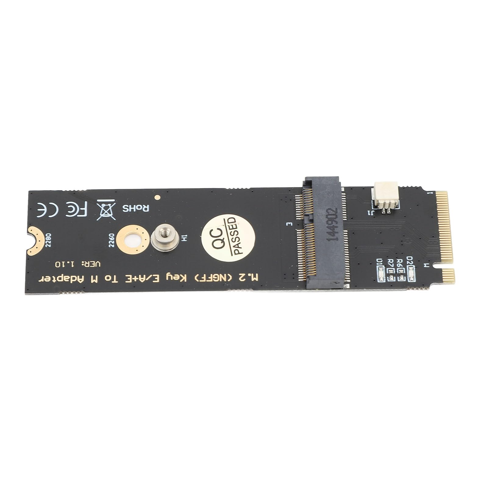
Fuentes
Slot: PCI Express x16 (Gen4/Gen5)
Descripción breve: Ranura de expansión de altas prestaciones usada para GPUs/aceleradoras.
Pines/Carriles/Voltajes/Velocidad: x16 carriles · Gen4 16 GT/s · Gen5 32 GT/s
Uso principal: Tarjetas gráficas; también aceleradoras y NVMe en adaptador
Compatibilidad actual: Alta
Identificación física
- Ranura larga con pestaña; color variable por fabricante.
Notas técnicas
- Ancho de banda efectivo depende de generación y carriles disponibles (CPU/Chipset).
Fotos
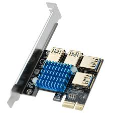
Fuentes
| Conector | Identificación física | Descripción breve | Pines / Carriles / Voltajes / Velocidad | Uso principal | Compatibilidad actual | Referencia técnica |
|---|---|---|---|---|---|---|
| PCI Express (x1/x4/x8/x16) | Ranuras largas según carriles | Bus de expansión serial (GPU, NIC, SSD) | Gen3–5 / 8–32 GT/s por carril / 3.3 V & 12 V | Tarjetas PCIe | Alta | PCI-SIG |
| M.2 E-Key (Wi-Fi/BT) | Ranura corta con muesca E (2230) | Módulos Wi-Fi/Bluetooth o CNVi | PCIe x1 + USB 2.0 / 5 Gb/s máx | Red inalámbrica | Alta | Intel |
5. Conectores externos
Conector externo: DisplayPort 1.4 / 2.x
Descripción breve: Interfaz de vídeo digital de alto rendimiento (alternativa a HDMI).
Pines/Carriles/Voltajes/Velocidad: 1.4 = 32.4 Gb/s, 2.1 = 80 Gb/s / +3.3 V
Uso principal: Monitores de PC, docking stations, GPU.
Compatibilidad actual: Alta
Identificación física
- Conector rectangular con una esquina en bisel; 20 pines.
Notas técnicas
- DP 2.x soporta 8K/10K y modo alterno USB-C.
Fotos
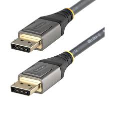
Fuentes
Conector externo: HDMI 2.1
Descripción breve: Transmite vídeo/audio digital hasta 10K y HDR dinámico.
Pines/Carriles/Voltajes/Velocidad: 48 Gb/s / +5 V / TMDS o FRL (4 lanes)
Uso principal: Monitores, TVs, GPUs, consolas.
Compatibilidad actual: Alta
Identificación física
- Conector trapezoidal de 19 pines; color negro o plateado.
Notas técnicas
- Retrocompatible con HDMI 1.x; requiere cable “Ultra High Speed”.
Fotos

Fuentes
Conector externo: RJ-45 (1G / 2.5G / 10G)
Descripción breve: Estándar de red Ethernet cableada (Cat 5e–Cat 6a/7).
Pines/Carriles/Voltajes/Velocidad: 8 pines / 1 Gb/s → 10 Gb/s / 1 V TTL
Uso principal: Redes LAN, Internet, NAS, routers.
Compatibilidad actual: Alta
Identificación física
- Conector rectangular transparente de 8 pines (8P8C).
Notas técnicas
- 2.5G y 10G dependen del cableado (Cat 6+); PoE opcional.
Fotos
")
Fuentes
Conector externo: USB-C (USB4/PD)
Descripción breve: Conector reversible para datos, vídeo y alimentación (PD).
Pines/Carriles/Voltajes/Velocidad: 24 pines · USB4 hasta 40 Gbps · PD hasta 100–240 W (según perfil)
Uso principal: Carga y conexión de periféricos/monitores/docks
Compatibilidad actual: Alta (ojo: no todo USB-C soporta TB/PD)
Identificación física
- Ovalado y simétrico; símbolos: rayo (Thunderbolt), “SS” (SuperSpeed).
Notas técnicas
- Requisitos de cable para 40 Gbps/240 W; DP Alt Mode para vídeo si no es TB.
Fotos
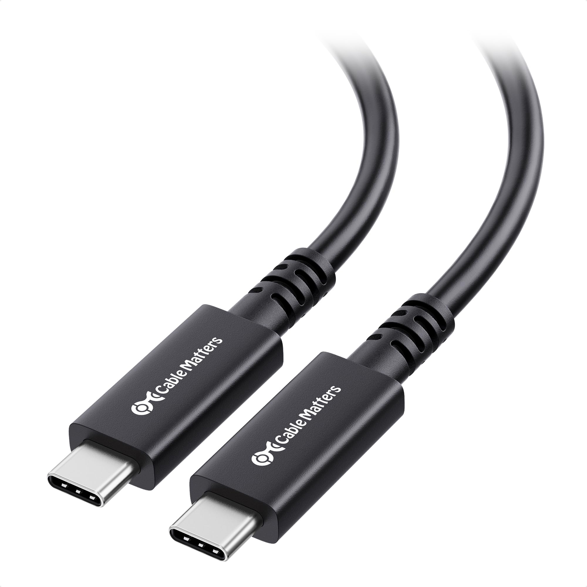
Fuentes
Conector externo: USB-A 2.0 / 3.x
Descripción breve: Conector de datos y carga más común en PCs y periféricos.
Pines/Carriles/Voltajes/Velocidad: 2.0 = 480 Mb/s, 3.2 Gen 1 = 5 Gb/s, Gen 2 = 10 Gb/s / 5 V (0.5–0.9 A)
Uso principal: Periféricos (ratón, teclado, almacenamiento).
Compatibilidad actual: Alta
Identificación física
- Rectangular clásico; 4 pines (2.0) o 9 pines (3.x, con contactos azules).
Notas técnicas
- USB-A sigue muy extendido; limitado frente a USB-C.
Fotos
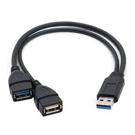
Fuentes
Conector externo: USB-B
Descripción breve: Conector de host-device, usado en impresoras, DACs, hubs y equipos de laboratorio.
Pines/Carriles/Voltajes/Velocidad: 2.0 = 480 Mb/s, 3.0 = 5 Gb/s / 5 V
Uso principal: Comunicación PC ↔ periférico.
Compatibilidad actual: Media
Identificación física
- Cuadrado con esquinas biseladas superiores; suele ser azul en versiones 3.x.
Notas técnicas
- En desuso en equipos modernos; aún presente en hardware profesional.
Fotos
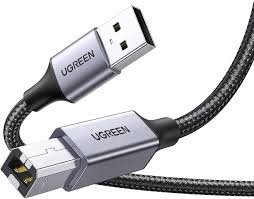
Fuentes
| Conector | Identificación física | Descripción breve | Pines / Carriles / Voltajes / Velocidad | Uso principal | Compatibilidad actual | Referencia técnica |
|---|---|---|---|---|---|---|
| USB-C / USB4 | Reversible, ovalado | Datos, vídeo y carga (PD 100 W) | 24 p / 40 Gb/s / 5–20 V | Universal I/O | Alta | USB-IF |
| USB-A 2.0/3.x | Rectangular, 4 o 9 pines (azul = 3.x) | Periféricos y almacenamiento | 480 Mb/s → 10 Gb/s / 5 V | Periféricos clásicos | Alta | USB-IF |
| USB-B | Cuadrado biselado; azul (3.x) | Conector host-device (impresoras, DACs) | 480 Mb/s → 5 Gb/s / 5 V | Periféricos | Media | USB-IF |
| HDMI 2.1 | Trapezoidal 19 pines | Vídeo/audio digital hasta 10K HDR | 48 Gb/s / +5 V | Monitores y TVs | Alta | HDMI.org |
| DisplayPort 1.4 / 2.x | Rectangular 20 p con bisel | Vídeo digital 8K/10K | 32.4–80 Gb/s / +3.3 V | Monitores PC | Alta | VESA |
| RJ-45 (1G/2.5G/10G) | Transparente 8P8C | Conector Ethernet LAN | 8 p / 1–10 Gb/s / PoE opcional | Red cableada | Alta | IEEE 802.3 |